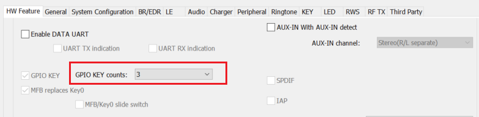
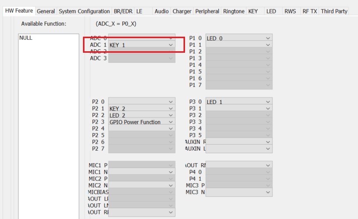
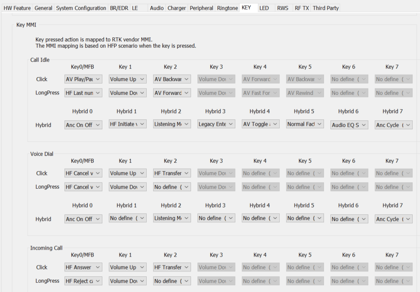

KEY Function Application Note
V1.1
2023/05/22
Revision History
| Version | Date | Description |
| V1.0.0.0 | 2021/10/21 | Stable Release |
| V1.1 | 2023/05/22 | Revise Format |
Contents
Table List
Figure List
Glossary
1 Introduction
This MMI application note contains the following information:
- how to configure key function on McuConfig Tool.
- how to use KEY api.
2 Key Configuration
User can configure key function on McuConfig Tool.
First, User can enable key function and set key number on McuConfig Tool General –> IO as Figure 2-1:

Figure 2-1 Key Function Enable
Then, User should configure key IO input number on McuConfig Tool General –> Pinmux as Figure 2-2:

Figure 2-2 Key Pin Configuration
After enable key function, User can configure key function map according to different call status on McuConfig Tool KEY –> KEY_MMI Figure 2-3:

Figure 2-3 Key Function Map Configuration
3 Key Api Usage
The purpose of this chapter is to give an overview of key api. The source code is in sdk\src\sample\rws\app_key_process.c.
3.1 Initialization
User can use the following api to Initialize when system does initialization.
{
key_data.mfb_key = KEY0_MASK;
#if F_APP_KEY_EXTEND_FEATURE
app_key_remap_init();
#endif
#if F_APP_ERWS_SUPPORT
#endif
}
3.2 Detect Key Action
when key is pressed or released, app will receive io message and handle by the following api.
{
key_check.
key = io_driver_msg_recv->
u.
param >> 8;
app_key_check_press(key_check);
#if F_APP_CLI_BINARY_MP_SUPPORT
{
}
#endif
}
3.3 Handle Key Action
App check status of key press or release in this function. The major content is divided into two parts to deal with, including key press and key release. And app start timer to judge key action status, such as LONG_PRESS, LONG_PRESS_POWER_ON, LONG_PRESS_POWER_OFF, LONG_PRESS_ENTER_PAIRING etc.
{
uint8_t key = key_check.
key;
uint8_t i;
APP_PRINT_TRACE4(
"app_key_check_press: key mask %02x, key_pressed %d, pre_clicks %d, long %d",
key, key_check.
key_pressed, key_data.key_click, key_data.key_long_pressed);
#if F_APP_DURIAN_SUPPORT
app_durian_key_release_event(key, key_check.
key_pressed);
#endif
{
......
}
else
{
......
}
3.4 Find Key MMI
When long pressed timer timeout or key release, App will find corresponding mmi based on key action status and mmi map setting on McuConfig Tool
{
uint8_t long_press = 0;
bool relay_key_tone = true;
{
relay_key_tone = false;
}
......
}
static void app_key_hybrid_click(uint8_t key)
{
uint8_t i;
bool is_only_allow_factory_reset = false;
bool relay_key_tone = true;
APP_PRINT_INFO3(
"app_key_hybrid_click: device_state = %d, enable_factory_reset_when_in_the_box = %d in box = %d",
{
relay_key_tone = false;
}
......
}
3.5 Execute Key Action
App will execute the corresponding mmi depending on the current connection state, single or multi-spk mode,
{
APP_PRINT_INFO4(
"app_key_execute_action: action = %x, local_loc = %d remote_loc = %d roleswap_status %d",
if (app_roleswap_ctrl_get_status() != APP_ROLESWAP_STATUS_IDLE)
{
return;
}
{
{
app_key_clear();
return;
}
}
......
}